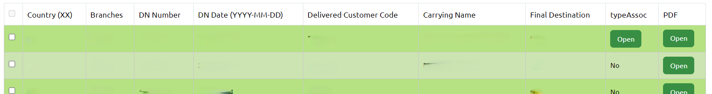
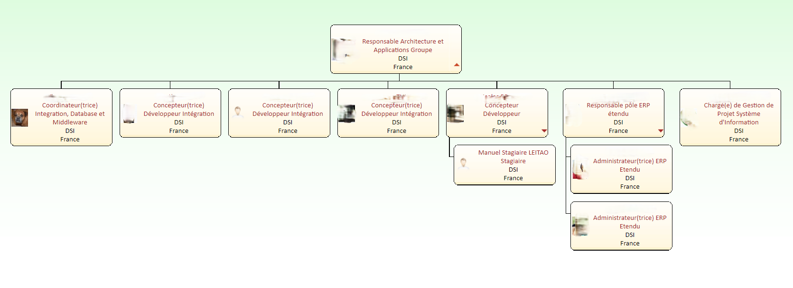

Présentation du stage.
Durant ce stage, j'ai été assigné à la refonte d'une application web nommée Weasel. Celle-ci
est une application qui sert de stockage de documents associés à des métadonnées, générés
par un ERP (JDE). Elle est utilisée par des utilisateurs internes pour accéder rapidement à
ces documents. C'est une application qui a été développée en PHP/Symfony2 en 2013.
Comme
cette application vieillissait, il était nécessaire de faire un travail complet de refonte.
À savoir :
- Rétro-ingénierie de l'application actuelle.
- Rédaction, présentation et validation d'un cahier des charges, qui était absent lors de la création de l'application.
- Développement de l'application complète (front-end, back-end et base de données) en Symfony 6.4-LTS.
- Refonte totale de l'intégration qui était réalisée par le logiciel Talend. Désormais, l'intégration des données est gérée par un script PHP.
- Validation et migration vers la production.
Le plus grand défi durant ce stage (sans compter l'apprentissage du langage et du framework) était de faire en sorte que l'application réponde beaucoup plus vite. L'ancienne version pouvait prendre 1 à 2 minutes pour répondre, mais j'ai trouvé des solutions pour pallier ce problème. Maintenant, le temps de réponse est de maximum 6 à 7 secondes.
Tuteur en entreprise : Nicolas BREGIER
Tuteur pédagogique : Gilles PERROT
Date : du 8 avril 2024 au 28 juin 2024 (12 semaines)
Entreprise : Vetoquinol

Vetoquinol est un laboratoire pharmaceutique vétérinaire, destiné aux animaux de production
et de compagnie. Créé en 1933 par Joseph Frechin, l'entreprise comptait près de 2 500
employés à travers le monde en 2023 et a réalisé un chiffre d'affaires de 529 millions
d'euros en 2023.
En 1980, 20 % du chiffre d'affaires était déjà réalisé hors de France.
Dans les années 1990, Vetoquinol s'est implanté au Canada et aux États-Unis, puis en Inde en
2009 et au Japon en 2015. Son introduction en bourse en 2006 a accéléré son potentiel de
développement.
Au total, Vetoquinol est aujourd'hui présent dans 24 pays et travaille
avec 60 distributeurs dans 50 autres pays.
Choisir et implémenter les architectures adaptées.
Pour cette application, il a été décidé qu'elle serait développée en PHP 8.1 et avec
Symfony 6.4. Weasel sera la première application réalisée avec les nouvelles
versions de PHP et de Symfony chez Vetoquinol, ce qui permettra de mettre à jour les
bundles déjà faits par Nicolas.
Pour pouvoir développer cette application, j'ai
dû apprendre le PHP en amont avec des vidéos sur YouTube et des cours sur
OpenClassrooms, qui sont parfaits pour apprendre à
développer. Après mon apprentissage du PHP, je devais apprendre Symfony 6. J'ai donc
regardé des
vidéos très complètes, mais l'apprentissage de Symfony a
surtout été fait par l'expérience durant le stage.

Élaborer et implémenter les spécifications fonctionnelles et non fonctionnelles à partir des exigences.


- L'amélioration du front-end de la page d'accueil utilisateur. J'ai donc fait plusieurs propositions au fur et à mesure jusqu'à arriver à une interface qui a été validée par mon tuteur et le responsable de l'équipe.
- Un script PHP pour récupérer les utilisateurs selon l'année et le nombre de connexions.
- Un script pour transférer les données de la base de données de production vers ma base de données Weasel sur le serveur web sur lequel je travaille.
- Amélioration globale de l'interface.
Adopter de bonnes pratique de conception et de programmation.
- Créer des méthodes personnalisées en Twig
- Comment se protéger des injections SQL
- Discuter de ma logique pour résoudre un problème dans certains domaines
- Des petits conseils en Twig pour aller plus vite
- Créer des services pour y mettre la logique
- Comment créer le serveur web de développement et la base de données de dev-web5, etc.
Vérifier et valider la qualité de l'application par les tests.
Pour cette application, nous aurons plusieurs tests :
Pour les tests utilisateurs, j'ai créé un script PHP pour récupérer
tous les utilisateurs selon une ou plusieurs années et selon un
certain nombre de connexions, afin d'obtenir des avis d'utilisateurs
qui se connectent plutôt souvent.
Pour ce faire, je commence par
vérifier s'il y a des arguments ou des options pour savoir à quoi
devra ressembler la commande. Si aucun argument ou option n'est
transmis, alors la commande demandera interactivement les arguments
et les options (les années, si les résultats doivent être séparés ou
non et le nombre minimum de connexions à l'application).
Ensuite, j'appelle la fonction qui récupère les utilisateurs et les affiche.

Résultat (les noms, prénoms et e-mails ont été floutés) :
Après avoir récupéré les utilisateurs qui utilisent le plus l'application, nous pouvons leur envoyer un e-mail pour leur demander leur avis sur l'utilisation de la nouvelle application.
Pour les tests techniques, le responsable de l'équipe souhaite pouvoir faire coexister l'ancien Weasel et le nouveau en parallèle afin de vérifier si les comportements sont bien les mêmes et si les informations sont identiques dans le temps. Pour l'ancien Weasel, rien ne change, mais de mon côté, comme il a été décidé de ne pas utiliser l'ancien flux Talend de Weasel pour l'intégration dans l'application, j'ai donc créé un script PHP qui reproduit exactement le comportement du flux Talend (sauf pour certains points qui n'étaient pas précisés dans la documentation et pour lesquels personne n'a de réponse). Après avoir créé le script PHP, mon rôle s'arrête là. Il revient maintenant à l'équipe d'intégration de me fournir les fichiers .pdf et .txt dans un dossier pour que mon script puisse effectuer l'intégration des données. J'ai également un fichier Excel à compléter pour répertorier tous les tests à effectuer sur l'application, par exemple : se connecter avec un mauvais mot de passe l'authentification a bien etait rejetée, si oui ... , si non ... ? Une fois ce fichier complété, il faudra tester l'application à l'aide de ce fichier Excel.
Je dois également effectuer une qualification pharmaceutique de l'application, c'est-à-dire vérifier que les données sont bien les mêmes entre l'ancienne application et la nouvelle. Comme nous sommes dans le domaine pharmaceutique, toutes les données et les droits doivent être vérifiés scrupuleusement. Cette tâche n'a pas encore été effectuée au moment où j'écris ces lignes.
Organiser la restitution de données à travers la programmation et la Visualisation
L'application que j'ai développée permet à l'utilisateur de rechercher des documents et de les récupérer soit en les téléchargeant, soit en les envoyant par mail à un tiers. Dans cet article, je vais me concentrer sur trois tables de la base de données que j'ai utilisées : "Document", "AssociatedDocument" et "Propertie".
J'ai conservé ces tables du précédent MCD car je devais créer la même application que mon prédécesseur, sans modifier le MCD ni le flux (pour plus de détail). Les filtres de recherche sont basés sur les propriétés et chaque ligne du tableau correspond à un document. Chaque colonne correspond à une métadonnée liée au type de document, avec ses valeurs dans les cases. Il est également indiqué si un document associé est disponible ou non.
Il est possible d'accéder au PDF d'un document en cliquant sur le bouton "Open". Le PDF est alors recherché dans l'arborescence, que j'ai organisée de la manière suivante : /pays/type_document/annee/classement/. Cette organisation facilite la recherche de documents. Les valeurs de l'arborescence sont directement enregistrées dans la table "Document".

Pour l'intégration de nouveaux documents dans la base de données, je dispose d'un dossier contenant des sous-dossiers correspondant à chaque exécution du flux. Dans ces sous-dossiers, je trouve les documents à ajouter dans l'ERP, avec leur fichier PDF et leur fichier texte contenant les métadonnées.
Lors de l'exécution du script d'intégration que j'ai créé en PHP, je vérifie si un nouveau sous-dossier a été ajouté. Si c'est le cas, je récupère dans un tableau chaque document avec son fichier PDF et son fichier texte. Je vérifie ensuite que les cinq valeurs obligatoires soient bien renseignées. Si la valeur "magasin" n'est pas renseignée, je la crée. Si une autre valeur obligatoire manque, je transfère le fichier PDF et le fichier texte dans un dossier différent qui regroupe tous les documents incomplets, et j'ajoute une ligne dans les logs d'intégration pour indiquer le problème rencontré.
Si toutes les valeurs obligatoires sont présentes, j'enregistre le fichier PDF à son emplacement définitif dans l'arborescence, et j'ajoute le document et ses propriétés dans la base de données. Je vérifie également si le document possède un document associé, pour l'ajouter à son tour dans la base de données.
Auparavant, l'intégration était effectuée par un flux Talend géré par l'équipe d'intégration. Cependant, mon responsable souhaite réduire notre dépendance à Talend. J'ai donc créé mon propre script d'intégration et l'équipe d'intégration me fournit les documents à intégrer.
Comprendre les enjeux et moyens de sécurisation des données et du Code
En termes de sécurisation des données sur les serveurs, nous avons des serveurs de développement, de validation et de production. Il y a des sauvegardes du code source, de la base de données et des données associées à l'application. De plus, une sauvegarde système est effectuée tous les jours. En fin de semaine, les sauvegardes sont mises sur des bandes et conservées pendant 30 jours. Ensuite, le contenu des bandes peut être écrasé pour recommencer le cycle.
Pour accéder aux données et aux applications de l'entreprise, dont Weasel, il faut un ordinateur Vetoquinol et une authentification via SSO, ce qui permet de sécuriser l'accès aux données. Même avec un PC Vetoquinol et une authentification réussie, il faut être connecté soit au réseau Wi-Fi de l'entreprise, soit via Ethernet. Ces deux options sont uniquement disponibles sur site. Pour accéder aux applications et aux données depuis l'extérieur, il est nécessaire de se connecter au VPN.
Les enjeux sont principalement commerciaux, car Vetoquinol n'est pas une entreprise informatique mais un laboratoire pharmaceutique. Ainsi, si des projets informatiques sont créés, c'est pour répondre à un besoin de l'entreprise. Le besoin pour Weasel est principalement lié à l'archivage.
Assurer la confidentialité des données (intégrité et sécurité)
Optimiser les modèles de données de l’entreprise
Lorsque j'ai commencé mon stage, l'une des premières choses que j'ai faites a été d'examiner le MCD (modèle conceptuel de données) de l'application actuelle. Mon but était de comprendre comment l'application était conçue et comment je pouvais l'exploiter, car on m'avait dit au départ que la base de données ne devait pas être modifiée.
Après une
analyse
minutieuse, j'ai remarqué que deux tables ne servaient à rien. C'est à ce moment-là que
j'ai émis l'idée de modifier le MCD, ce qui aurait des répercussions sur la base de
données et sur le flux de données. J'ai pris cette décision car je ne pouvais vraiment
pas laisser ces tables en l'état : l'une d'entre elles contenait 24 millions de lignes
inutilisées, ce qui était évidemment beaucoup trop.
Je pense que cette table a été
créée lors du développement de l'application en 2013, mais que la développeuse a oublié
de la supprimer par la suite, après avoir mieux formalisé les autres tables.
Ensuite, j'ai dû optimiser la vitesse de recherche des documents dans la base de données. J'ai donc eu l'idée de créer un index sur deux colonnes en utilisant la méthode BTREE. Cette solution a fonctionné parfaitement et a permis d'accélérer considérablement la recherche de documents.
Formaliser les besoins du client et de l’utilisateur C5
Pour ce projet, j'ai dû écrire le cahier des charges. Pour ce faire, j'ai utilisé toute la documentation possible sur l'application que j'ai pu trouver. Comme l'application n'a pas d'administrateur, je n'avais pas de client direct, ce qui rendait la formalisation des besoins plus compliquée. Lors de la création de l'ancien Weasel, la développeuse n'avait pas non plus de cahier des charges, donc je ne pouvais pas me baser sur un document précédent.
La seule personne à qui je pouvais poser des questions sur l'application était le responsable de l'équipe qui m'a assigné le projet. Nous avons donc eu des réunions régulières pour discuter des modifications à apporter, des nouvelles fonctionnalités à ajouter ou des changements de processus à effectuer. Par exemple, l'intégration des données dans la base de données et l'enregistrement des documents sont désormais réalisés par un script PHP au lieu d'un flux Talend, comme c'était le cas auparavant. Les changements de style devaient également être validés.
Pour recueillir les avis des utilisateurs, j'avais prévu de faire un questionnaire et de l'envoyer aux utilisateurs les plus fréquents. Malheureusement, cela n'a pas été possible pour des raisons que je ne peux divulguer ici. Cependant, j'avais déjà préparé un script PHP qui permet de récupérer les utilisateurs les plus fréquents par année. Des tests utilisateurs sont prévus lorsque l'intégration sera mise en place (le rsync entre les serveurs n'est pas encore en place, ce n'est pas à moi de le faire). Une fois cela en place, nous pourrons envisager des tests utilisateurs.
Pour recueillir les informations, j'ai utilisé les documents sur l'application qui m'ont été fournis. J'ai également demandé des informations au responsable de l'équipe et à mon tuteur, mais plus sur l'aspect technique.
Les priorités de l'application étaient surtout le temps de réponse lors de la récupération des documents et la sécurisation, qui n'étaient pas vraiment assurés sur l'ancienne application. Ce sont les deux priorités principales pour la nouvelle version de l'application.
Définir et mettre en oeuvre une démarche de suivi de projet C5
Pour ce projet, j'ai pu organiser le travail à ma manière en termes de planification, de suivi et d'outils. J'ai donc mis en place un Trello pour le projet Weasel, ce qui m'a permis de répertorier ce qu'il me restait à faire et dans quel ordre le faire, en fonction des critères et des priorités que j'avais établis après avoir rédigé le cahier des charges. Avant d'utiliser Trello, j'avais essayé l'application To-Do de Microsoft Office, mais après quelques utilisations, j'ai remarqué qu'elle n'était pas vraiment adaptée à ce projet. C'est pourquoi j'ai opté pour Trello.
En termes de suivi du projet, j'avais une réunion hebdomadaire avec mon tuteur pour discuter de mon avancement et échanger des astuces de développement en général. J'avais également une réunion avec le responsable de l'équipe et mon tuteur environ une fois par mois pour faire le point sur l'évolution de l'application et sa direction future. Si j'avais des questions sur l'entreprise, le site ou la gestion des équipes, je pouvais les poser à mon responsable via Teams ou directement dans son bureau.
Mobiliser les compétences interpersonnelles pour intégrer une équipe informatique C6
Pour commencer, je tiens à préciser que je suis introverti, mais j'essaie de surmonter cette difficulté en me forçant à aller vers les membres de l'équipe pour leur poser des questions sur eux et quelques détails sur leur rôle. Lors des réunions de suivi de l'application, c'est moi qui organise toute la réunion, y compris les sujets, les participants, les questions, le compte rendu, et les sujets pour le prochain point de suivi.
Le travail d'équipe se déroule plutôt bien. Par exemple, pour le flux, nous sommes quatre : moi, mon tuteur, une personne de l'équipe d'intégration et le DBA. Nous coordonnons nos efforts et nous adaptons aux exigences de chacun, ce qui aboutit à une bonne collaboration. Voici comment nous procédons :
- Les fichiers sont créés par l'ERP (équipe ERP).
- Un flux Talend les déplace sur un serveur Talend pour les utiliser (équipe intégration).
- Un RSYNC est effectué entre le serveur Talend et mon répertoire (DBA).
- Le script PHP d'intégration est exécuté (équipe application -> moi).
Nous avons décidé de procéder ainsi temporairement, le temps que l'ancien et le nouveau Weasel fonctionnent en parallèle.
Comprendre la diversité, la structure et la dimension de l’informatique dans une organisation (ESN, DSI, …) C6
Chez Vetoquinol, le pôle DSI est dirigé par Sandrine Perrier et est divisé en cinq grandes parties : "Métiers", "Applications et architecture groupe", "Données groupe", "Infrastructure et sécurité groupe" et "Workplace France". Il y a aussi quelques personnes qui ne sont pas intégrées dans ces grandes divisions. Pour plus de détails sur ces parties, voir [screen].
Je fais partie de l'équipe "Applications et architecture groupe", dirigée par Luigi Ruggiero.
Voici une phrase qui
définit bien les objectifs de la DSI chez Vetoquinol :
"IT is your partner to
ensure
business continuity and drive the evolution of the information system to achieve the
vision of Vetoquinol."